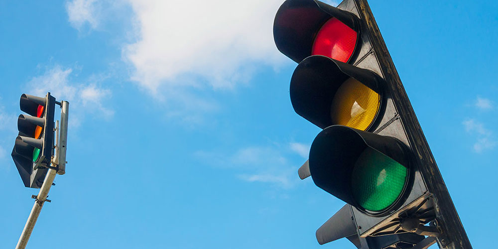
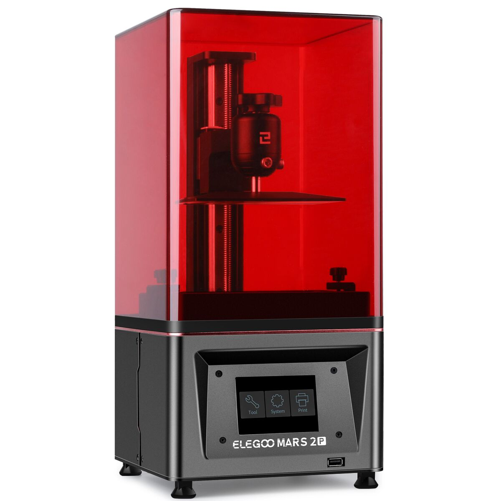

I am a rising Junior at The University of Texas at Austin pursuing a bachelor's in Electrical and
Computer Engineering and a minor in Business Administration.
I am always actively seeking my next challenge. I have a passion for learning, design, and innovation.
If you have questions feel free to email me or connect with me!
I am always actively seeking my next challenge. I have a passion for learning, design, and innovation. If you
have any questions feel free to email me
or connect with me!
A completely automated chess set capable of challenging Grandmasters. I
am leading the Hardware Design within the system. Currently in the subsytem design and testing phase.
Fermii
Fermii is an iOS based application that would allow users to know when and
where their fellow classmates would be studying the same material. This would encourage people to
work with one another and learn through teaching. Not only would one benefit from learning from one
another, but would be rewarded for it too. Using a
point system that provides discounts to local restaurants or shops, students will be encouraged to study
more, and grow their network while doing so.

The Right Left
Do you hate unprotected left hand turns at four-way intersections? Because I
do. With a passion. The right left is a sensor based system that
was created during a 24-hour hackathon that tackles that exact problem. By manipulating a Qualcomm
DragonBoard and a few light sensors, the
team was able to create a prototype of a speed measuring system. This speed measuring system tracked
oncoming traffic and would use pre-measured
data to inform the driver.

3D Printing
Using my personal Elegoo Mars 2 Pro, a resin 3D printer, I actively design
and create parts. Whether it be for other personal projects, or a proof of concept, 3D printing
has become one of my favorite hobbies allowing for new projects on a weekly basis.